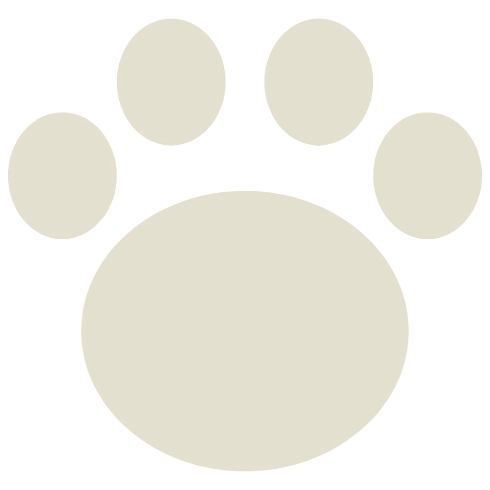

About Us
Because Every Pup Deserves To Shine!
Furry Fresh Grooming is a full-service dog grooming salon dedicated to pampering your pooch with top-tier care. Our mission is to provide a stress-free, enjoyable experience for both dogs and their owners, ensuring your pet leaves feeling clean, healthy, and stylish!
Why Choose Furry Fresh Grooming?
- Certified Groomers: All staff are professionally trained and certified, with a passion for animal care.
- Personalized Care: Each dog’s grooming is tailored to their breed, size, and personality.
- Stress-Free Environment: We prioritize the comfort of your pet, using calming techniques and providing plenty of breaks.
- Eco-Friendly Products: Our shampoos, conditioners, and treatments are natural and safe for your pets and the environment.
Our Story
The story behind Furry Fresh Grooming is rooted in a love for dogs and a passion for creating a positive, stress-free grooming experience for pets. The business was founded by a lifelong dog lover, Sarah Thompson, who grew up with dogs and always had a natural connection with animals. After years of working in the pet care industry, [Founder Name] noticed that many traditional grooming salons could be overwhelming for dogs, especially those with anxiety or special needs.
Determined to create a grooming service that prioritized both the well-being of pets and the convenience of their owners, Sarah opened Furry Fresh Grooming. The mission was simple: provide high-quality grooming that keeps dogs happy, healthy, and looking their best, while offering a calm, caring environment where every dog feels comfortable and loved.
Understanding that every dog is unique, Furry Fresh Grooming developed tailored services to meet the needs of all dogs—from playful puppies experiencing their first bath to senior dogs needing extra care. The business also expanded to include mobile grooming, recognizing the need for a more convenient solution for busy pet parents and those with dogs who feel anxious in unfamiliar environments.
What sets Furry Fresh Grooming apart is its dedication to using natural, eco-friendly products and hiring only the most skilled and compassionate groomers. Sarah Thompson and the team believe that grooming is not just about aesthetics—it's about improving the health and happiness of each dog that walks (or rides in the van) through their doors.
Today, Furry Fresh Grooming continues to grow, but the heart of the business remains the same: putting the needs of pets first and creating a grooming experience that's fresh, fun, and friendly for everyone. Whether it’s in the salon or via the mobile grooming van, Furry Fresh is committed to helping dogs feel their best, one fresh groom at a time.
"Furry Fresh Grooming made my dog feel like a star! The groomers were so patient with my nervous pup."
– Emily R.
"My Golden Retriever has never looked better. I love the mobile service!"
– James K.
"The groomers were flexible around my schedule and provided excellent care for my dog!"
- Amanda L.